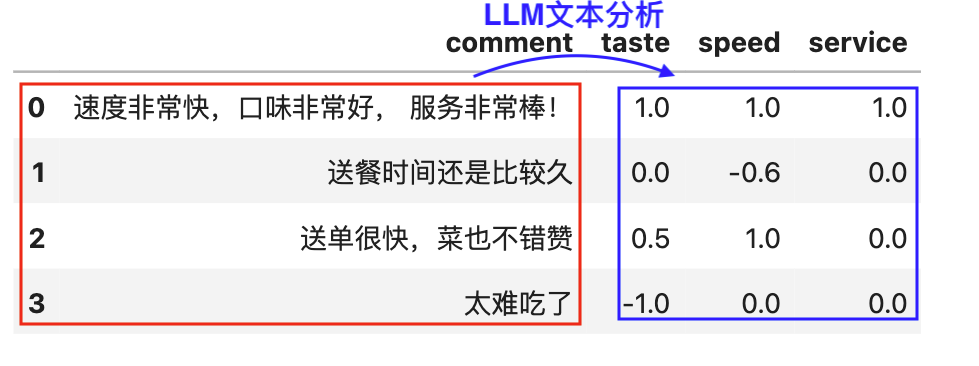
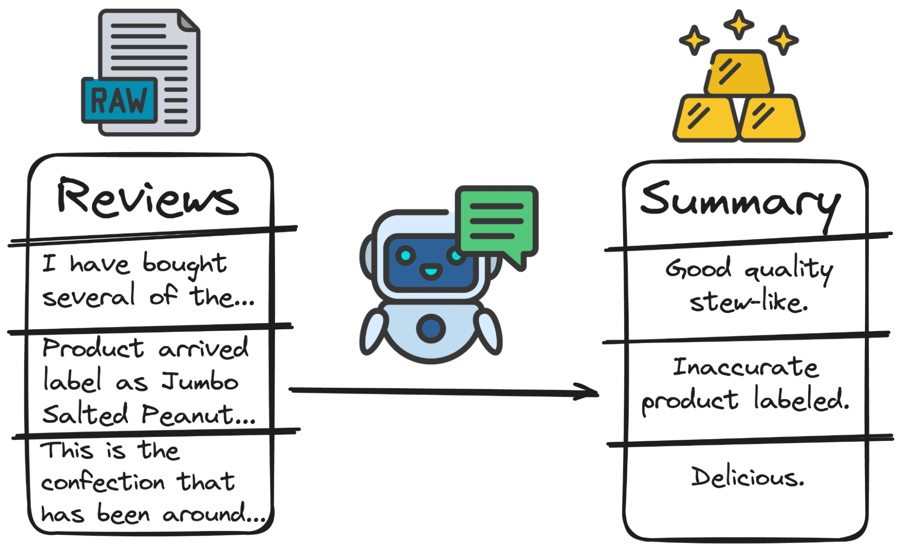
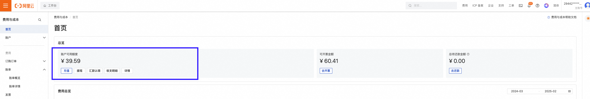
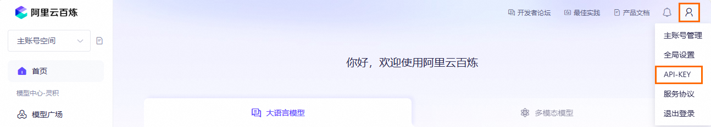
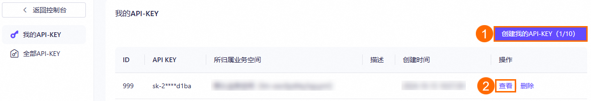
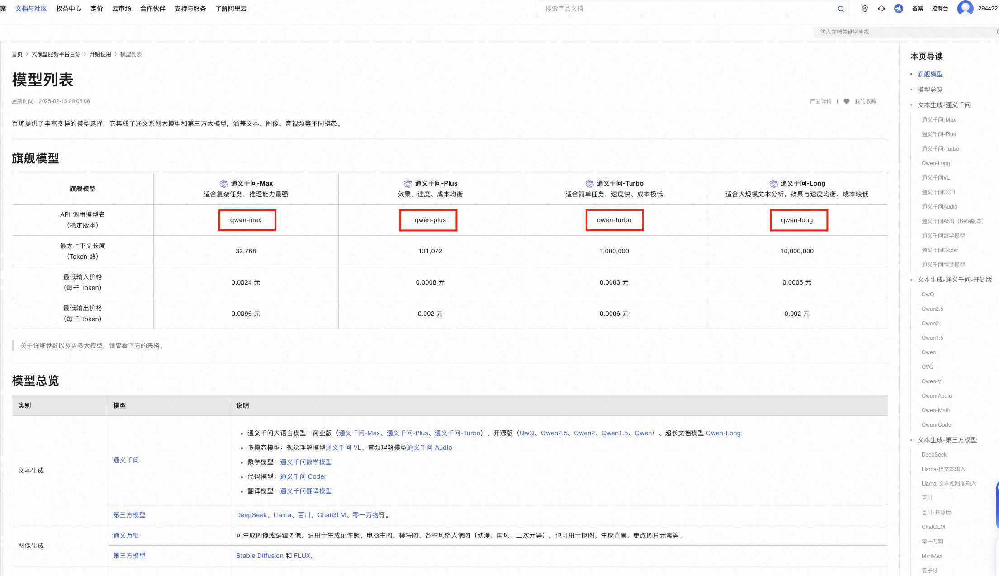
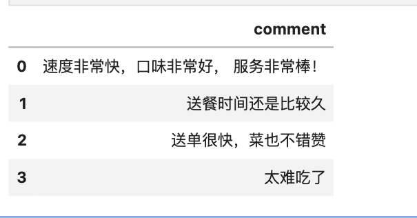

实验数据为外卖评论， 今天咱们做个有难度的文本分析任务，从不同维度(味道、速度、服务)对外卖评论进行打分(-1.0~1.0)。

一、文本分析
文本分析（也称为文本挖掘或自然语言处理，NLP）是指使用计算机算法和技术从大量文本数据中提取有价值信息的过程。文本分析的目标是从非结构化的文本数据中识别模式、提取关键信息、理解语义，并将其转化为结构化数据以便进一步分析和应用。 常用的文本分析方法有:
- 词频统计
- 情感分析
- 文本分类
- 话题分析
- …

二、大模型云服务商
随着 chatGPT、deepseek、通义千问这类大语言模型(LLM, large language model)的出现， 它们增强了文本理解能力，能够更精准的把握文本中的语义和情绪等信息，使得文本分析任务实现难度大大降低。
一般大模型服务提供商，有免费开源和封闭付费两种服务。
- 免费模型， 可通过 Ollama 本地部署。部署教程可参考 教程 | 如何使用 Ollama 下载 & 使用本地大语言模型
- 付费模型， 账户有钱的情况下， 通过联网调用大模型厂商的 API 接口。
使用 Python 代码， 联网调用大模型的 API，我们首先需要确定三个
- BASE_URL 服务提供商运行大模型的网址。 如果是本地离线， BASE_URL = ''
- API_KEY 调用服务所需密钥，类似于钥匙
- MODEL_NAME 调用哪种模型(名字)
阿里云不需要注册，支付宝扫码登录，即可调用市面上常见的大模型，如 通义千问qwen、Llama、deepseek、chatGLM等。现在我们以阿里云服务商为例， 依次获取BASE_URL、API_KEY、MODEL_NAME。
2.1 充钱
阿里云替咱们在云服务商运行大模型，肯定不能是免费的。 所以先检查下账号里是否有钱，没钱了记得充值哦。 点击链接 https://billing-cost.console.aliyun.com/home

2.2 BASE_URL
阿里云运行大模型的网址 BASE_URL 为 https://dashscope.aliyuncs.com/compatible-mode/v1
2.3 API_KEY
点击 阿里云百炼 https://bailian.console.aliyun.com/，打开后点击右上角 图标，在下拉菜单中单击API-KEY。
图标，在下拉菜单中单击API-KEY。

在左侧导航栏，选择 全部 API-KEY 或 我的 API-KEY ，然后创建（图中位置 ①）或查看（图中位置 ②）API Key。

注意: 请不要将 API Key 以任何方式公开，避免因未经授权的使用造成安全风险或资金损失。
2.4 MODEL_NAME
通义千问的模型列表 https://help.aliyun.com/zh/model-studio/getting-started/models， 根据任务需要，选择适合的模型。

上图仅展示了阿里云服务提供的部分大模型， 以通义千问旗舰模型为例， MODEL_NAME模型名分别为**qwen-max、qwen-plus、qwen-turbo、qwen-long**。
三、环境配置
在 Python 中调用大模型， 不论是本地离线 API 还是云服务 API， 先要配置好相应的环境。 cntext2x支持Ollama和LMstudio结构化输出， 本文使用Ollama+cntext2.x 组合。
3.1 安装软件 Ollama
Ollama是一款开源应用程序，可让您使用 MacOS、Linux 和 Windows 上的命令行界面在本地运行、创建和共享大型语言模型。
Ollama 可以直接从其库中访问各种 LLM，只需一个命令即可下载。下载后，只需执行一个命令即可开始使用。这对于工作量围绕终端窗口的用户非常有帮助。Ollama 的安装、配置、使用的详细教程可阅读 教程 | 如何使用 Ollama 下载 & 使用本地大语言模型

3.2 安装 cntext2.x
cntext2.x是大邓开发的文本分析库， 内置了丰富的文本分析函数， 如词频统计、词典法情感分析、经济政策不确定性 epu 等， 大大降低了文本分析难度。 以本文大模型文本分析为例， Python 源代码需要 80+ 行， 经过大邓封装， 使用 cntext2.x 内置函数 text_analysis_by_llm 仅需要不到 5 行代码。
安装包 cntext-2.1.7-py3-none-any.whl 是付费内容(100 元)， 如需使用加微信: 372335839，备注「姓名-学校-专业-cntext」
所有 cntext2.x 安装方法类似， 以目前 cntext2.1.7 为例，将 cntext-2.1.7-py3-none-any.whl 放置于桌面，打开 cmd (苹果电脑打开 terminal)， 输入 cd desktop
cd desktop
之后在 cmd (苹果电脑打开 terminal) 中使用 pip3 安装
pip3 install cntext-2.1.7-py3-none-any.whl
需要注意， cntext2.x 使用环境为 Python3.8 及以上版本； 文章开头和文章末都有 cntext-2.1.7-py3-none-any.whl 获取方式说明。
四、实验代码
4.1 启动本地服务(Ollama)
使用 cntext2.x 调用本地电脑安装的大模型进行文本分析，不需要设置BASE_URL、API_KEY 这两个参数。
本节使用本地安装的模型， 先在命令行cmd (mac 对应 terminal) 中检查本地已安装的模型。
ollama list
Run
NAME ID SIZE MODIFIED
qwen2.5:7b 845dbda0ea48 4.7 GB 7 days ago
qwen2.5:3b 357c53fb659c 1.9 GB 7 days ago
qwen2.5:0.5b a8b0c5157701 397 MB 7 days ago
qwen2.5:1.5b 65ec06548149 986 MB 7 days ago
deepseek-r1:1.5b a42b25d8c10a 1.1 GB 7 days ago
deepseek-r1:7b 0a8c26691023 4.7 GB 7 days ago
nomic-embed-text:latest 0a109f422b47 274 MB 9 months ago
在 cmd 中使用命令 ollama serve 启动本地服务。
ollama serve
Run
2025/02/14 16:00:18 routes.go:1259: INFO server config env="map[HTTPS_PROXY: HTTP_PROXY: NO_PROXY: OLLAMA_DEBUG:false OLLAMA_FLASH_ATTENTION:false OLLAMA_GPU_OVERHEAD:0 OLLAMA_HOST:http://127.0.0.1:11434 OLLAMA_KEEP_ALIVE:5m0s OLLAMA_KV_CACHE_TYPE: OLLAMA_LLM_LIBRARY: OLLAMA_LOAD_TIMEOUT:5m0s OLLAMA_MAX_LOADED_MODELS:0 OLLAMA_MAX_QUEUE:512 OLLAMA_MODELS:/Users/deng/.ollama/models OLLAMA_MULTIUSER_CACHE:false OLLAMA_NOHISTORY:false OLLAMA_NOPRUNE:false OLLAMA_NUM_PARALLEL:0 OLLAMA_ORIGINS:[http://localhost https://localhost http://localhost:* https://localhost:* http://127.0.0.1 https://127.0.0.1 http://127.0.0.1:* https://127.0.0.1:* http://0.0.0.0 https://0.0.0.0 http://0.0.0.0:* https://0.0.0.0:* app://* file://* tauri://* vscode-webview://*] OLLAMA_SCHED_SPREAD:false http_proxy: https_proxy: no_proxy:]"
time=2025-02-07T16:00:18.551+08:00 level=INFO source=images.go:757 msg="total blobs: 11"
time=2025-02-07T16:00:18.551+08:00 level=INFO source=images.go:764 msg="total unused blobs removed: 0"
[GIN-debug] [WARNING] Creating an Engine instance with the Logger and Recovery middleware already attached.
[GIN-debug] [WARNING] Running in "debug" mode. Switch to "release" mode in production.
- using env: export GIN_MODE=release
- using code: gin.SetMode(gin.ReleaseMode)
er.(*Server).GenerateRoutes.func1 (5 handlers)
......
time=2025-02-14T16:00:18.553+08:00 level=INFO source=routes.go:1339 msg="Dynamic LLM libraries" runners=[metal]
time=2025-02-14T16:00:18.577+08:00 level=INFO source=types.go:131 msg="inference compute" id=0 library=metal variant="" compute="" driver=0.0 name="" total="72.0 GiB" available="72.0 GiB"
cmd 之中出现上方信息，证明服务已经启动。 如果之前已经启动服务， 会看到信息
Error: listen tcp 127.0.0.1:11434: bind: address already in use
接下来，我们在 Python 中调用模型 qwen2.5:7b
4.2 读取数据
实验数据为外卖评论， 今天咱们做个有难度的任务，从不同维度(味道、速度、服务)对外卖评论进行打分(-1.0~1.0)。
import pandas as pd
#构造实验数据
data = ['速度非常快，口味非常好， 服务非常棒！',
'送餐时间还是比较久',
'送单很快，菜也不错赞',
'太难吃了']
df = pd.DataFrame(data, columns=['comment'])
#假设有外卖评论数据集data.csv， 文件内有字段comment， 直接读取数据。
#df = pd.read_csv('data.csv')
df

4.3 小实验ct.llm
import cntext as ct
PROMPT = '从口味taste、速度speed、服务service三个维度， 对外卖评论内容进行文本分析， 分别返回不同维度的分值(分值范围-1.0 ~ 1.0)'
MODEL_NAME = 'qwen2.5:7b'
#味道、速度、服务
OUTPUT_FORMAT = {'taste': float, 'speed': float, 'service': float}
COMMENT_CONTENT = '太难吃了'
#使用
#result = ct.llm(text=COMMENT_CONTENT,
#或
result = ct.llm(text=COMMENT_CONTENT,
prompt=PROMPT,
model_name=MODEL_NAME,
output_format={'taste': float,
'speed': float,
'service': float},
max_retries=3,
return_df=False)
result
Run
{'taste': -1.0, 'speed': 0.0, 'service': 0.0}
4.4 内置Prompt
cntext2x内置了常用的10种中文文本分析任务， 每个任务都有一个默认的 prompt 模板，用户可以直接使用默认模板或者参考模板进行自定义。
#查看有哪些任务
ct.llm.tasks_list()
Run
['sentiment',
'emotion',
'classify',
'intent',
'keywords',
'entities',
'summarize',
'rewrite',
'quality',
'similarity']
#获取sentiment模板
ct.llm.tasks_get('sentiment')
Run
{'prompt': '分析评论的情感倾向：返回情感类别 label（pos 表示正面，neg 表示负面，neutral 表示中性）和情感分值 score（取值范围 -1~1，负数为负面）',
'output_format': {'label': 'str', 'score': 'float'}}
#使用sentiment提示词模板。
#启用Ollama服务，调用qwen2.5:7b模型
ct.llm("服务很棒！", task="sentiment", backend="ollama", model_name="qwen2.5:7b")
Run
[cntext2x] ✅ 连接模型服务: http://127.0.0.1:11434/v1
{'label': 'pos', 'score': 0.8}
4.5 云服务商 API
使用 cntext2.x 调用云服务商大模型进行文本分析，需要设置BASE_URL、API_KEY等参数。
import cntext as ct
PROMPT = '从口味taste、速度speed、服务service三个维度， 对外卖评论内容进行文本分析， 分别返回不同维度的分值(分值范围-1.0 ~ 1.0)'
BASE_URL = 'https://dashscope.aliyuncs.com/compatible-mode/v1'
API_KEY = '你的API-KEY'
MODEL_NAME = 'qwen-max'
#味道、速度、服务
OUTPUT_FORMAT = {'taste': float, 'speed': float, 'service': float}
COMMENT_CONTENT = '太难吃了'
result = ct.llm(text=COMMENT_CONTENT,
prompt=PROMPT,
base_url=BASE_URL,
api_key=API_KEY,
model_name=MODEL_NAME,
output_format=OUTPUT_FORMAT,
max_retries=3,
return_df=False)
result
Run
{'taste': -1.0, 'speed': 0.0, 'service': 0.0}
小实验成功，现在设计分析函数， 对所有的评论进行分析，输出 dataframe 格式，保存到 csv 中。
4.6 设计分析函数
使用 cntext2.x 中的大模型文本分析函数 ct.llm(text, prompt, base_url, api_key, model_name, temperature, output_format, max_retries, return_df)_
- text (str): 待分析的文本内容
- task (str): 预设任务名称，默认为 'sentiment'。可用任务见 TASKS.keys()
- backend (str, optional): 快捷后端别名：
- 'ollama' → http://127.0.0.1:11434/v1
- 'lmstudio' 或 'lms' → http://localhost:1234/v1
- None → 需配合 base_url 使用
- base_url (str, optional): 自定义模型服务地址，优先级高于 backend。 示例：
- 远程：https://dashscope.aliyuncs.com/compatible-mode/v1
- 内网：http://192.168.1.10:11434/v1
- 本地：http://localhost:1234/v1
- api_key (str): API 密钥，远程服务必填，本地通常为 "EMPTY"
- model_name (str): 模型名称（需服务端已加载）
- temperature (float): 生成温度，0 表示确定性输出
- max_retries (int): 失败重试次数
- return_df (bool): 是否返回 DataFrame
- verbose (bool): 是否输出连接信息
- prompt (str, optional): 自定义系统提示语
- output_format (dict, optional): 自定义输出结构，如 {'label': str, 'score': float}
以调用云服务商大模型为例， 设计ct.llm
import cntext as ct
import pandas as pd
#分析函数
def llm_analysis(text):
result = ct.llm(text=text,
prompt= '从口味taste、速度speed、服务service三个维度， 对外卖评论内容进行文本分析， 分别返回不同维度的分值(分值范围-1.0 ~ 1.0)',
base_url='https://dashscope.aliyuncs.com/compatible-mode/v1',
api_key='你的API-KEY',
model_name='qwen-max',
temperature=0,
output_format={'taste': float, 'speed': float, 'service': float}
)
return pd.Series(result)
#批量运算
df2 = df['comment'].apply(llm_analysis)
res_df = pd.concat([df, df2], axis=1)
#保存分析结果
res_df.to_csv('result.csv', index=False)
res_df
五、获取 cntext2.x
安装包cntext-2.1.7-py3-none-any.whl 是付费内容(100 元)， 如需使用加微信: 372335839，备注「姓名-学校-专业-cntext」